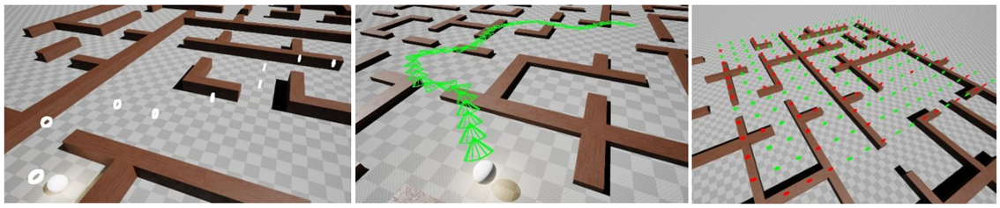

[Itch Page] UE5 + C++ | Team of 12 | 2026 | Over 10 weeks I gained valuable leadership and teamwork experience delivering this project as Technical Lead.
For this stealth project I managed a team of 12 developers using Github, and learnt how beneficial a structure in which tasks and stages are clearly defined and designated gives others (and myself) the space and direction to collaborate effectively. This was some of the most fun I've had meeting a brief.
Among other more player-centered systems, I personally handled the generation of our library environment
for this game, and developed and integrated enemy AI with custom A* pathfinding written in C++. Custom navigation
was necessitated by the unorthodox terrain, I enjoyed combining this with stealth mechanics.
My NPC paths, procedural animation spline, and navigation map visualiser tools:

A procedural "purgatory library" to the brief of "Unusual Interiors" required complex instancing, pooling, and culling;
throughout development, I learnt how vital working closely with Asset Production is both for performance and gameplay implementation.
In Anamnesis, I created generators for bookshelves' layout, books and colours, items, and hiding spaces. I also programmed:
Music and SFX
Shaders and Animated Materials
AI Behaviour and Animation
UI and Player Abilities